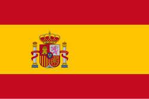

2016
Guadeloupe
A.Chrn / 2008
Je m'appelle A. Chrn (anonymisé le temps des séléctions Parcoursup). Je suis né en 2008, j'ai grandi dans l'agglomération Orléanaise. Ayant un attrait particulier pour la création numérique et l'informatique, j'ai tout d'abord opté en première générale pour les spécialités suivantes :
Futur étudiant en Numérique et informatique.
Portfolio présentant mon profil, mes expériences, mes projets et ma motivation pour intégrer une formation qui touche à la technologie et la.
Bouton désactivé afin d'anonymisé mon Portfolio durant les séléctions Parcoursup
Langues

Langue maternelle

LV1 : niveau B2

LV2 : niveau A2
Hard-Skills
Soft-Skills
Guadeloupe
Venise
Canada
Corse
Venise
Belgique & Pays-Bas
Copenhague & Suède
Italie
Séville